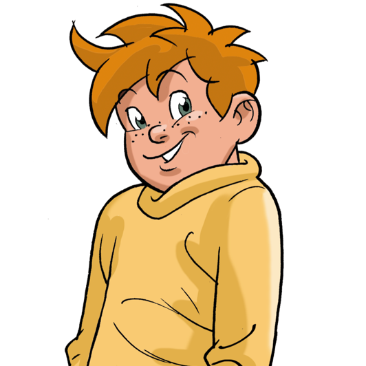
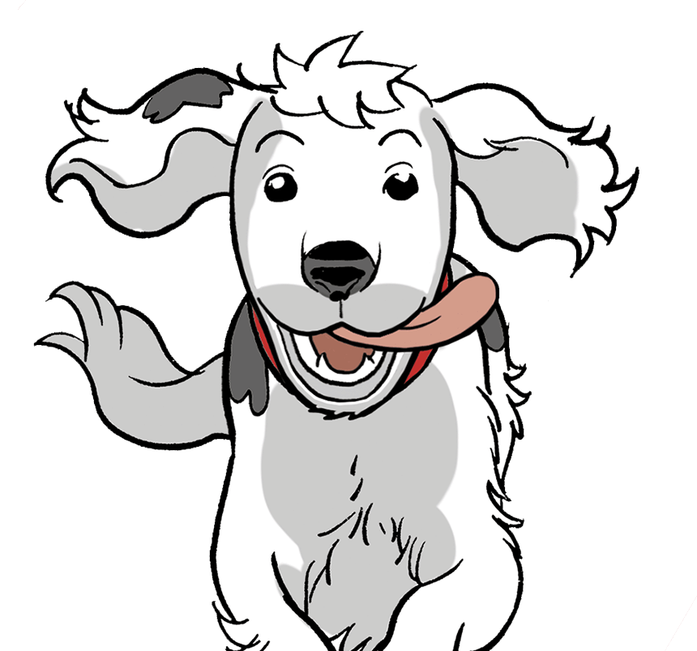

Tims Vater, ein Ingenieur, ist vor zwei Jahren bei einem Unfall gestorben. Seine Mutter lebt und arbeitet in
einer nahen Kleinstadt.
Wichtig: Tim hat aufgrund seines überdurchschnittlichen Zeugnisses ein Stipendium durch die
Stiftung des Internats erhalten.
Spitzname:Früher Tarzan
Karl
Alter: Karl ist 10 Jahre alt.
Klasse: Er geht in die 5b in der Internatsschule.
Der Vater von Karl ist Mathematiker.
Wichtig: Karl ist etwas „verkopft“ – er hat ein phänomenales Gedächtnis. Deshalb wird er von
seinen Freunden auch „Karl, der Computer“ genannt. Er ist überdurchschnittlich intelligent, kombinationsfreudig
und verfügt über ein gutes Allgemeinwissen. Technisch ist er sehr begabt und findet so manche ungewöhnliche
Lösung.
Spitzname: Computer
Klöschen 
Alter: Klöschen ist 10 Jahre alt.
Klasse: Er geht in die 5b in der Internatsschule.
Seine Eltern wohnen im Villenviertel der Stadt, sein Vater ist ein vermögender Unternehmer, er besitzt eine
Schokoladenfabrik.
Wichtig: Klößchen heißt eigentlich Wilhelm Sauerlich.
Spitzname:Klößchen
Gaby
Alter: Gaby ist 10 Jahre alt.
Klasse:Sie geht in die 5b in der Internatsschule.
Ihr Vater ist Hauptkommissar bei der Kriminalpolizei. Ihre Mutter betreibt einen kleinen Lebensmittelladen mit
Catering-Service im unteren Geschoss ihres Wohnhauses.
Wichtig: Gaby ist sehr tierlieb. Hund Oskar ist ihr treuer Begleiter, sie hat ihm viele Tricks
beigebracht, die den vier Kindern in schwierigen Situationen schon so manches Mal nützlich waren. Gaby ist eine
gute Schwimmerin und aktiv im Schwimmverein. Das Lernen in der Schule fällt ihr leicht.
Spitzname: Die Pfote
Gaby 
Alter: /
Klasse: /
Wichtig: Oskar ist ein schwarz-weißer Cockerspaniel. Er ist auf einem Auge blind und ein
treuer Begleiter von Gaby und immer dabei, wenn die vier unterwegs sind. Gaby hat an ihrem Fahrrad einen Korb,
in dem Oskar es sich auf längeren Strecken gemütlich macht. Oskars große Leidenschaft ist das Schwimmen, er ist
ein richtiger Wasserhund und kann sogar tauchen. Er scheint einen siebten Sinn zu haben und ist immer zur
Stelle, wenn Gefahr droht. Oskar gehorcht zwar gut, agiert aber auch sehr eigenständig. Er ist derjenige, der
Hilfe holt, wenn es für die vier einmal eng wird.